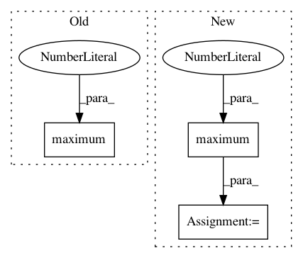

8d98c3433be527d30cfc82d89a0053a68ba576ed,tensorflow_privacy/privacy/dp_query/quantile_adaptive_clip_sum_query.py,QuantileAdaptiveClipSumQuery,get_noised_result,#QuantileAdaptiveClipSumQuery#,193
Before Change
loss_grad = unclipped_quantile - global_state.target_unclipped_quantile
new_l2_norm_clip = gs.l2_norm_clip - global_state.learning_rate * loss_grad
new_l2_norm_clip = tf.maximum(0.0, new_l2_norm_clip)
new_sum_stddev = new_l2_norm_clip * global_state.noise_multiplier
new_sum_query_global_state = self._sum_query.make_global_state(
l2_norm_clip=new_l2_norm_clip,
After Change
if self._geometric_update:
new_l2_norm_clip = gs.l2_norm_clip * tf.math.exp(-update)
else:
new_l2_norm_clip = tf.math.maximum(0.0, gs.l2_norm_clip - update)
new_sum_stddev = new_l2_norm_clip * global_state.noise_multiplier
new_sum_query_global_state = self._sum_query.make_global_state(
l2_norm_clip=new_l2_norm_clip,
In pattern: SUPERPATTERN
Frequency: 3
Non-data size: 3
Instances
Project Name: tensorflow/privacy
Commit Name: 8d98c3433be527d30cfc82d89a0053a68ba576ed
Time: 2019-12-16
Author: galenandrew@google.com
File Name: tensorflow_privacy/privacy/dp_query/quantile_adaptive_clip_sum_query.py
Class Name: QuantileAdaptiveClipSumQuery
Method Name: get_noised_result
Project Name: kbardool/keras-frcnn
Commit Name: 30e5ed0c71d07684d5bb2436f8adb55f290cc537
Time: 2017-05-31
Author: thomas.bm.janssens@gmail.com
File Name: keras_frcnn/roi_helpers.py
Class Name:
Method Name: non_max_suppression_fast
Project Name: kbardool/keras-frcnn
Commit Name: e5c463c054fcc10b4d85a51bdef04b3a2bb1ccc7
Time: 2017-05-30
Author: thomas.bm.janssens@gmail.com
File Name: keras_frcnn/roi_helpers.py
Class Name:
Method Name: non_max_suppression_fast